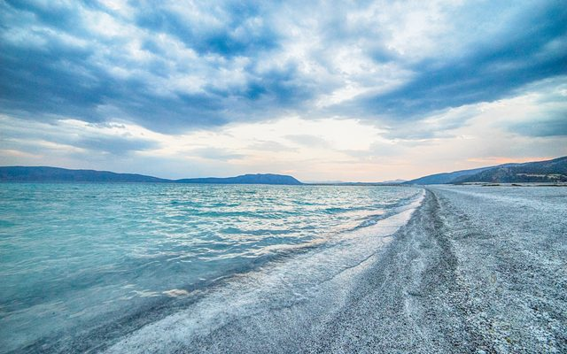

شلال


وادٍ عميق (كانيون)


بحيرة
 أوزون غولطرابزون
أوزون غولطرابزون بحيرة إغيرديرإسبرطة
بحيرة إغيرديرإسبرطة بحيرة الملح (توز غولو)آق سراي
بحيرة الملح (توز غولو)آق سراي
بحيرة سالدابوردور بحيرة صبنجةسكاريا
بحيرة صبنجةسكاريا بحيرة فوهة نمرودبدليس
بحيرة فوهة نمرودبدليس بحيرة كويجغيزموغلا
بحيرة كويجغيزموغلا بحيرة ميكهقونية
بحيرة ميكهقونية بحيرة هزارإلازيغ
بحيرة هزارإلازيغ بحيرة وانوان
بحيرة وانوان بحيرة چيلديرأردهان
بحيرة چيلديرأردهان قره غول (بورچكا)أرتفين
قره غول (بورچكا)أرتفين متنزه بحيرة أبانت الطبيعيبولو
متنزه بحيرة أبانت الطبيعيبولو متنزه بحيرة بافا الطبيعيموغلا
متنزه بحيرة بافا الطبيعيموغلا متنزه بحيرة بيشهير الوطنيقونية
متنزه بحيرة بيشهير الوطنيقونية متنزه بحيرة غولجوك البركانية الطبيعيإسبرطة
متنزه بحيرة غولجوك البركانية الطبيعيإسبرطة متنزه يدي غوللر الوطنيبولو
متنزه يدي غوللر الوطنيبولو